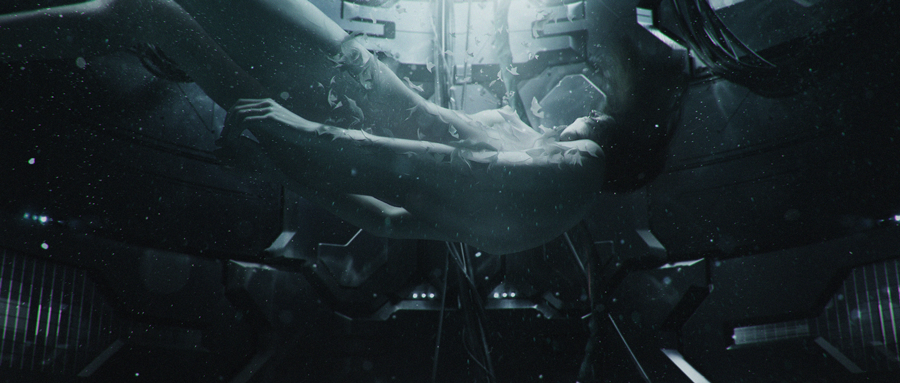

About Major Motoko Kusanagi
Motoko Kusanagi, or just Major, is a synthetic "full-body prosthesis" augmented-cybernetic human employed as the field commander of Public Security Section 9, an anti-cybercrime law-enforcement division of the Japanese National Public Safety Commission. She earned her military rank “Major” by serving in the JGSDF(Japan Ground Self-Defence Force).
Motoko Kusangi's transformation. Creative genius: Ash Thorp
Motoko Kusanagi's Characteristics
- Strong willed.
- Physically powerful.
- Highly Inteligent.
Motoko Kusanagi's Friends
Motoko shares a strong bond and respect with her partner Batou, to whom which she work with in several missions. Click on the links below to read more about them: